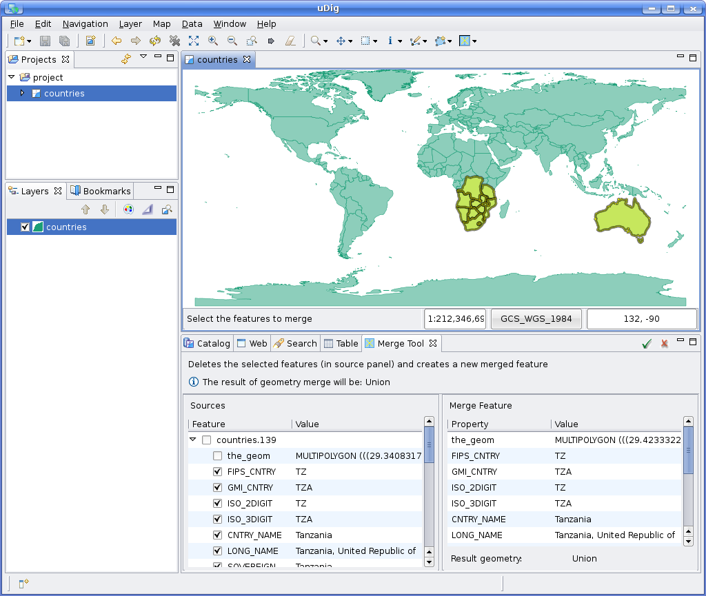
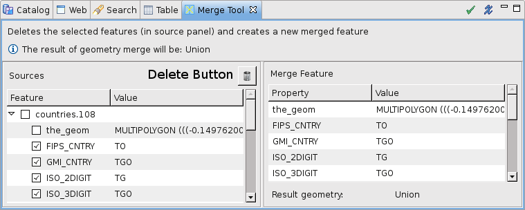

Merge Tool¶
 Merges geometries and attributes from various Features.
Merges geometries and attributes from various Features.
The Merge Tool works by selecting a set of features to be merged into one. It allows to set the geometry and attributes of the merged Feature. The geometry could be either the geometric union of the geometries from the input features, or the single geometry from one of the input features.
Note
Two different approaches to Merge Tool usage are currently available: the classic mode and the new operation mode. Their desciption in noted to follow.
To use the Merge tool (‘classic mode‘):¶
- Select the Merge Tool from the feature tool category in the tool bar.
You can use the keyboard short cut F to cycle through the available feature tools
Draw a box covering one or more features
The Merge Feature view will appear display two columns:
- Sources: these are the features that are being combined; check off the attributes you wish to appear in the result
- Merge Feature: this is the resulting Geometry
For doing a Merge you will need 2 or more features.
You can continue selecting more features by drawing a box.
Press Finish () to perform the operation
You can inspect your work in the Map editor
To save your work please press Edit > Commit from the menu bar

To use the Merge tool (‘operation mode‘):¶
- Using the Box Selection tool, draw a box covering one or more features.
- Right-click anywhere in the map and select Operations ‣ Merge Selected
- The Merge Feature view will appear containing two columns:
- Sources: these are the features that are being combined; check off the attributes you wish to appear in the result
- Merge Feature: this is the resulting Geometry
- For doing a Merge you will need 2 or more features in your featureset.
- Featureset can be changed using the Box Selection tool
- Shift + Left-Click on a new feature in the map to ADD it to the current featureset;
- Ctrl + Left-Click on a selected feature to REMOVE it from current set;
- ..or just draw a new box over some other features to replace the whole tool content.
- Press Finish () to perform the actual merge operation
- You can inspect your work in the Map editor
- To save your work please press Edit ‣ Commit from the menu bar
Behavior¶
The Merge Tool operates upon the current Layer.
In ‘classic mode‘, once the Merge Tool is selected, you can drag a bounding box to select which Features to merge.
In ‘operation mode‘ first selection is performed with Box Selection tool, then a Right-click (anywhere in the map) opens the context menu where Operations ‣ Merge Selected can be selected.
A view will be opened so you can specify exactly which attribute values from the input Features the merged Feature attributes shall assume the values of.
It could be the case that the geometric union produces a geometry whose type is not compatible with the allowable geometry type declared at the Layer‘s FeatureType. For example, merging two non touching Polygons on a polygon Layer would produce a MultiPolygon. In this case, assigning the geometric union to the merged Feature geometry attribute will not be possible, but one of the geometries from the source Features could be set through the Merge View.
When the Merge Tool proceeds to create the new, merged Feature, the ones it comes from will be deleted at the same time.
Note that the Merge Tool does not commit the result, but lets you undo the operation if desired, or commit the changes to the backend data repository as you would normally do in uDig.

Coordinate Reference System
When the Merge Tool is instructed to create the new geometry as the union of the geometries from the input Features, the union is performed in the current Layer‘s Coordinate Reference System.
Usage Example (‘classic mode‘)¶
Select the Merge Tool from the drop down buttons list as shown in Figure 1.

Figure 1. Selecting the Merge Tool.
Draw the Bounding Box to be used as the filter to select the Feature to be merged. At least two Features need to be selected for doing a Merge, but the view will be opened if one feature is selected.

Figure 2. Selecting the Features to merge.
Once you release the mouse button, the features matching the bounding box will be looked up and the Merge View will show up. Figure 3 shows the Merge View, which consists of two panels. The panel at the left is the Source Features panel and presents the selected features, their attributes, and allows to select attribute values from source features to assign to the Merge Feature.
The panel, at the right, is called the Merge Feature panel and presents the attributes of the feature to be created as the result of setting its attributes through the Source Features.
When the Merge View is opened, the Merge Feature panel is populated with the attributes from the
first Source feature found (the one at the top on the Source Features panel). The geometry
attribute of the Merge Feature assumes the value of the geometric union of the geometries from the
source Features, and if that is not possible due to a type conflict with the Layer’s FeatureType,
it assumes the value of the geometry from the first Feature.

Figure 3. Merge View. While the Merge View is opened, the user can set specific attributes in the Merge Feature to assume the values from other Source Features than the one at the top, by activating the checkbox corresponding to the desired attribute on the desired Source Feature.
It is also possible to select the whole set of attribute of a single Source Feature by activating the checkbox corresponding to the desired Source Feature.
Figure 4 shows how two attributes, SOVEREIGN and COLOR_MAP have been assigned to the Merge Feature from another Source Feature than the default one.

Figure 4. Merge View with user specified attributes.
Finally, when you’re ready setting the geometric and non geometric attribute values for the Merge Feature, press the Finish button on the Merge View. The Merge Tool will create the new Merge Feature and delete the Source Features in a single, undoable step.
The Map in Figure 5 shows how the two buildings on this example have been merged into one, and the Table View with the newly created Feature.

Figure 5. Merge result
Adding and deleting features.¶
For adding more features to be merged, select those features drawing a bounding box and they will be added to the view. For deleting features, select the feature to be deleted and click on the delete button or draw a bounding box with Ctrl key pushed over the desired feature.

Figure 6. Delete button
Usage Example (‘operation mode‘)¶
Use the Box Selection Tool to select features as in Figure 7.

Figure 7. Selecting features with the Box Selection Tool.
Once the desired features are selected, right-click on them and select: Operations ‣ Merge Selected.

Figure 8. Launch the Operation -> Merge Selected command.
The Merge View will be opened and selected features filled in.

Figure 9. The new Merge View windows containing the selected features.
Selection can be changed with Box Selection tool and Merge View will adapt to changes.

Figure 10. A new selection is being created.

Figure 11. Merge View self-updates and displays the new featureset.
Merge Operation can be fine tuned and lauched as in ‘classic mode‘.

Figure 12. Merge task completes as usual.